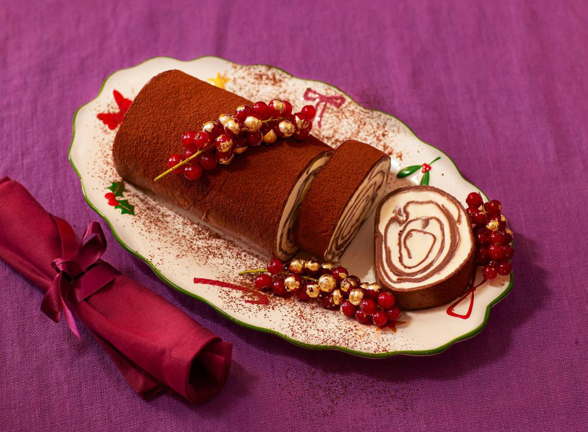

esma-flensjesrol

Fan van espresso martini? Dan is dit jouw kerstdessert. Deze rol van flensjes ziet er fantastisch uit op tafel en is ideaal om te delen.
voorbereidingstijd:
wacht tijd:
totaal tijd:
60 MIN
150 MIN
180 MIN
ingrediënten
- 6 middelgrote scharreleieren
- 5 el fijne kristalsuiker
- 175 ml verse slagroom
- 175 g mascarpone
- 40 ml espresso
- 15 ml koffielikeur (Gall & Gall)
- 10 ml wodka (Gall & Gall)
- 100 g ongezouten roomboter
- 500 ml volle melk
- 250 g patent tarwebloem
- 30 g cacaopoeder
- ½ tl zout
- 4 g AH Excellent Kerstmaker bladgoud
- 60 g rode bessen
kook stappen
- Splits 2 eieren, het eiwit gebruik je niet. Klop met een handmixer op hoge snelheid de eidooiers met 2 el suiker au bain-marie. Klop tot het mengsel dikker wordt, licht van kleur is en de suiker helemaal is opgelost. Dit duurt 2-3 min. Haal van het vuur.
- Klop de slagroom en 2 el suiker stevig met de handmixer. Roer de mascarpone los en spatel het opgeklopte eigeel erdoor. Vouw 1 el van het mascarponemengsel luchtig door de slagroom. Vouw daarna de slagroom (in delen) luchtig door het mascarponemengsel. Zet afgedekt met vershoudfolie in de koelkast tot gebruik.
- Meng de espresso met de koffielikeur en wodka. Laat afkoelen tot gebruik. Smelt de boter in een steelpan. Verwarm de melk tot lauwwarm en meng met de helft van de gesmolten boter. Klop de rest van de eieren met een garde los in de warme melk.
- Zeef de bloem en 25 g cacao boven een mengkom en meng met de rest van de suiker en het zout. Schenk het melkmengsel bij het bloemmengsel en mix tot een glad beslag. Laat 30 min. afgedekt rusten.
- Verhit ⅛ van de rest van de gesmolten boter in een grote koekenpan (23 cm Ø) op middelhoog vuur en schep er ⅛ van het beslag in. Draai de pan rond zodat de hele bodem dun bedekt is. Bak de crêpe 4-5 min. Keer halverwege. Besprenkel met wat van het espressomengsel. Bak zo de rest van de crêpes en laat op een plank of rooster 10-15 min. afkoelen. Stapel de crêpes niet op. Dek eventueel af met vershoudfolie om uitdrogen te voorkomen.
- Leg de afgekoelde crêpes op een groot stuk vershoudfolie, in 2 rijen, dakpansgewijs naast elkaar. Laat alle crêpes 2-3 cm overlappen. Verdeel de koude roomvulling erover, laat 3-4 cm van de randen vrij. Vouw de randen aan de lange kant 4 cm naar binnen en rol de crêpes met behulp van de vershoudfolie vanaf de korte kant op. Knoop de uiteinden van de folie dicht. Leg de rol minimaal 2 uur in de vriezer.
- Vul een kommetje tot 1 cm onder de rand met water en leg er een blaadje bladgoud op. Hou een trosje rode bessen aan de boven- en onderkant vast en doop in het goud, in het water. Haal direct uit het water. Laat drogen op een bordje. Herhaal met de rest van het bladgoud en de rode bessen. Leg in de koelkast tot gebruik.
- Haal de rol uit de vriezer. Verwijder de folie en snijd met een gekarteld mes 1 cm van de uiteinden af, deze gebruik je niet. Leg de rol op een serveerschaal, bestuif met de rest van de cacaopoeder en verdeel de rode bessen erover. Snijd in gelijke plakjes en serveer direct.